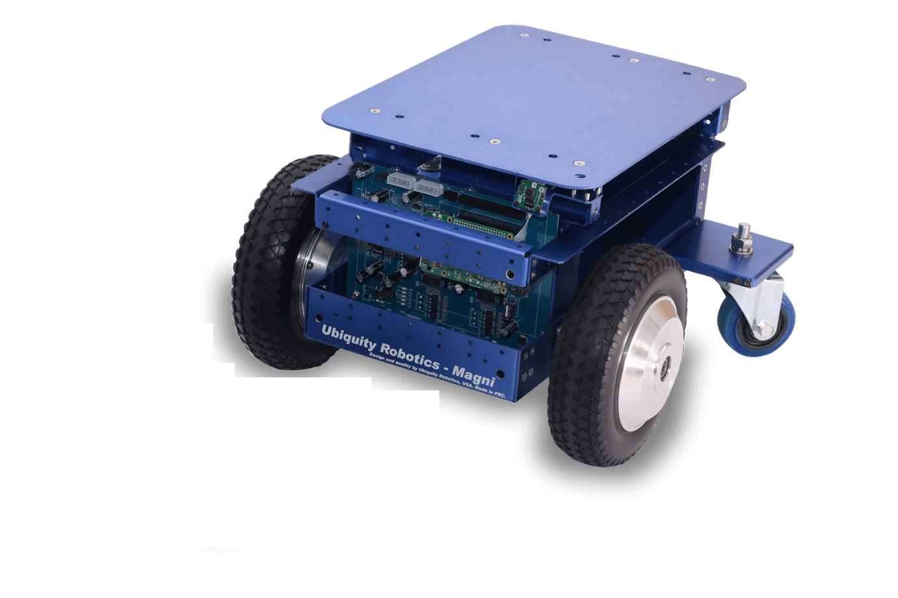

About Our Project
Background
The world of automation through robotic systems includes both commercial and mainstream residential applications. However, the RMDC prototype will be the first of its kind to be used on construction sites. Stanley Black & Decker, Inc. (SBD) is a world-renowned manufacturer of industrial tools and hardware that provides solutions for construction sites worldwide.
SBD is looking for a specific autonomous solution that will play a large role in worksite safety and save time and money, even if it is not necessarily a large factor in the construction of a building overall. Construction sites, especially those in developing countries, are a treasure trove of hazards such as dangerous equipment, immensely heavy materials, and more. One of these hazards is the metallic debris that is accidentally dropped during work (e.g. bolts, nails) or pieces of scrap metal left behind from adjustments made to larger pieces. Though workers are, for the most part, protected from such ground-based hazards by their heavy-duty work boots, at the end of a work day they must spend anywhere between one to three hours cleaning the worksite of such debris before they can go home. By assisting with this tedious task, the RMDC prototype could make a difference in construction sites worldwide. Not only would this robotic system reduce the time allotted to cleaning at the end of a work day, but if used during the workers’ break periods it could lighten their cleanup responsibilities overall.
Project Description and Goals
SBD provided the team with the Magni Silver, an all-purpose, fully-realized robotic platform manufactured by Ubiquity Robotic named Magni Silver. The Magni Silver has the capability to be reprogrammed and repurposed to fit any high-level robotics project. This platform comes with much- needed payload support, navigational tools, heavy-duty mobility, processing power, and feedback control so the team can focus more time on building and implementing a robust, reliable manipulator for debris collection. Since most of the metallic debris around a worksite usually involves small shrapnel (nails, staples, screws, nuts and bolts etc.) a typical robotic manipulator like a robotic arm is not an ideal choice for this project because it will have a hard time gripping small debris. Therefore, the team opted to use an array of ceramic magnets as the main device to collect the small debris. The ceramic magnets will be aligned on a rectangular metallic sheet which will be mounted on a forklift attached to the front of the robot. Collection and delivery of the metallic debris is the most essential part of this project so most of the time spent on hardware will be designing, building, and testing the forklift.
The Magni Silver runs on an open-source middleware called Robot Operating System (ROS) – more specifically Kinetic ROS – which supports a multitude of publicly-available third-party APIs. There are two primary aspects in developing the software for the robot: navigation and debris collection and delivery. The navigation aspect includes programming the robot to autonomously patrol an unbounded area of a worksite without collision for a specified amount of time. The robot will utilize a random pathing algorithm much like the iRobot “Roomba” to collect metallic debris within a 10-meter radius centered at its starting position. When the timer runs out a software interrupt will trigger, sending the robot to deposit the collected debris back at its starting location. If, at any point throughout its operation, the robot detects a ceiling-mounted fiducial marker, it will reset its position to the known position of the aforementioned marker to account for errors in motor-mounted odometry.